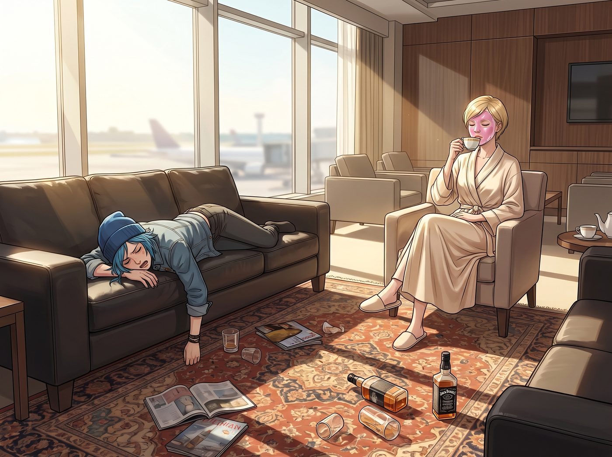
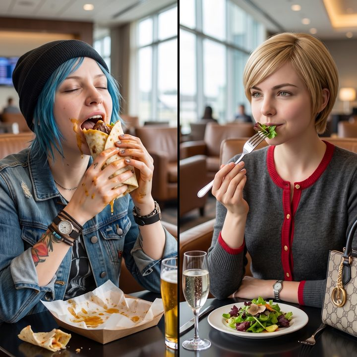

供應鏈資源整合早餐


清晨的陽光透過舊金山機場VIP貴賓室的落地窗灑了進來，照在滿地狼藉的波斯地毯和空了一半的威士忌酒瓶上。
Chloe 痛苦地在價值一萬五千美金的小牛皮沙發上翻了個身，宿醉讓她的大腦像是被一台V8引擎反覆碾壓。而在她對面，Victoria 已經換上了一套嶄新的真絲晨袍，臉上敷著散發著淡淡玫瑰香氣的高級水凝膜，整個人散發著一種即使世界末日也要保持精緻的老錢階級底氣。
一、階級飲食審美的內戰
「我已經讓外面的安保解除封鎖，並把這間貴賓室的行政主廚叫回來了。」Victoria 撕下面膜，端起一杯溫熱的檸檬水，「我需要一份白松露蛋白蛋捲，配上冷壓羽衣甘藍汁，來洗刷掉 Price 昨晚散發出來的那種濃烈的貧民窟酒精味。」
Chloe 猛地坐了起來，捂著快要裂開的頭，發出了充滿街頭火藥味的反擊。
「去妳的白松露，Chase。老娘現在需要的是油脂！是碳水化合物！是能把我從宿醉地獄裡拉出來的工業級垃圾食物！」Chloe 暴躁地抓著藍色亂髮，「我要一個塞滿了培根、炸薯餅和廉價合成起司的巨無霸早餐捲餅。如果十分鐘內我沒有攝取到三千大卡的飽和脂肪，我就會死在這張做作的沙發上。我自己去航廈外面的美食街找速食店。」
「妳敢踏出這扇門一步試試看。」Victoria 冷冷地瞥了她一眼，「我絕對不允許妳帶著一身廉價油炸食品的酸臭味，走進我的私人飛機機艙。那會污染我的羊絨座椅。」
「那妳就抱著妳的羽衣甘藍汁自己飛回西雅圖吧！老娘寧願去坐灰狗巴士！」Chloe 抓起皮夾克就要往外走，一場關於階級飲食審美的內戰一觸即發。
「拜託，現在才早上七點半，我們能不能暫停一下階級鬥爭？」Max 頂著兩個黑眼圈，手裡端著一杯剛從機器裡按出來的黑咖啡，無奈地擋在了 Chloe 面前。「我們就不能找個中立地帶嗎？比如去吃個鬆餅？鬆餅是沒有階級屬性的，每個人都喜歡鬆餅。」
二、合規商業合約的介入
就在 Max 試圖用和平主義的鬆餅來平息戰火時，實習生 Lily 從那台超大螢幕前轉過身來。她剛剛敲下最後一行代碼，螢幕上的西海岸航空雷達圖瞬間從一片死寂的紅色，變成了代表航班恢復正常的綠色光點。
「FAA的底層通訊協議已經重寫完畢，航班將在二十分鐘後恢復起降。」Lily 推了推反光的圓框眼鏡，乖巧地站了起來，大眼睛裡閃爍著極度理性的光芒。
「關於兩位學姐的早餐分歧，從團隊實體隔離風險的角度來看，Chloe 學姐去公共航廈購買未經嚴格溯源的速食，將增加百分之四十二的食物中毒與航班延誤風險。這在合規上是不被允許的。」
「看吧，連這個小惡魔都覺得妳的垃圾食物不合規。」Victoria 得意地揚起下巴。
「但是，」Lily 話鋒一轉，目光溫柔地轉向 Victoria，「強迫一位處於重度宿醉狀態的碳基生物進食白松露蛋白，會導致其血糖無法迅速恢復，進而引發嚴重的焦躁與潛在的物理暴力行為。這對我們團隊的內部穩定同樣構成了威脅。」
Chloe 哼了一聲：「聽到了嗎？不給我吃肉，我就把妳的真皮沙發給拆了。」
三、雙贏的解構方案
「因此，我已經啟動了供應鏈資源整合與階級餐飲折衷方案。」
Lily 拿起平板電腦，向眾人展示了一份剛剛發送給貴賓室行政主廚的強制性客製化菜單。
「Victoria 學姐昨晚支付了高達百分之五百溢價的包場費，根據這間貴賓室的服務級別協議第七條，主廚必須滿足我們任何的極端客製化飲食需求。否則我們有權要求全額退款。」
Lily 轉過頭，看著剛好推著餐車、滿頭大汗走進來的米其林星級主廚，乖巧地介紹了她的傑作。
「主廚先生已經為 Chloe 學姐準備了高淨值街頭捲餅——採用A5等級的日本和牛，搭配用純鴨油煎炸的有機馬鈴薯餅，混合了陳年高達起司與散養土雞蛋，最後用手工揉製的無麩質玉米餅捲起。」
Chloe 呆呆地看著餐車上那個散發著致命肉香和頂級油脂香氣的巨大捲餅，吞了一口口水。這玩意兒有著街頭垃圾食物的狂野外表，骨子裡卻流淌著頂級食材的奢華血液。
「而對於 Victoria 學姐，」Lily 繼續溫柔地說道，「主廚使用了完全相同的頂級和牛與松露食材，但進行了分子料理級別的解構與脫脂處理。這是一份低碳水和牛松露能量沙拉，完美符合您的熱量管控與老錢審美。」
餐車的另一邊，擺著一份精緻得像藝術品一樣的沙拉，旁邊還配著一杯顏色翠綠的冷壓蔬果汁。
四、被合法化解的戰爭
這場幾乎讓兩人分道揚鑣的早餐戰爭，就這樣被實習生用一份嚴絲合縫的合規商業合約和食材重組邏輯給瞬間平息了。
Chloe 抓起那個還滴著鴨油的和牛捲餅，狠狠咬了一大口。頂級脂肪在嘴裡炸開的瞬間，街頭霸王發出了一聲滿足的嘆息。
「老天……這是我這輩子吃過最奢華的垃圾。Lily，妳這個披著人皮的Excel，有時候還挺實用的。」
Victoria 則優雅地拿起純銀叉子，挑起一塊帶有松露香氣的沙拉葉，輕輕咀嚼了一下，嘴角微微上揚。「雖然把A5和牛做成捲餅是對食材的褻瀆，但只要不污染我的飛機，這份沙拉勉強達到了我的標準。」
Max 坐在旁邊，手裡端著主廚順便幫她烤的一份再普通不過的焦糖鬆餅，默默地舉起寶麗來相機，拍下了 Chloe 滿嘴流油和 Victoria 優雅吃草的同框畫面。
「順便一提，」Lily 坐回沙發上，端起一杯熱牛奶，乖巧地補充道，「這頓早餐的食材費用，我已經透過FAA的緊急修復端口，以聯邦系統維護期間的高階承包商營養耗損補貼為名義，直接向美國交通部報銷了。完全合法，且免稅哦。」
聽著這句輕描淡寫的總結，Max 咬了一口鬆餅，徹底放棄了對這個世界的正常認知。在二號車廂的生態裡，就算是吵架吃個早餐，最終買單的，永遠都是某個倒楣的聯邦政府機構。